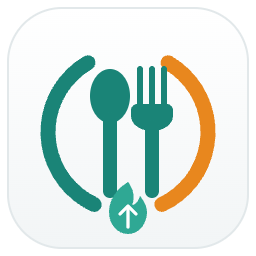
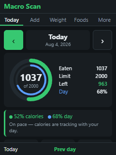
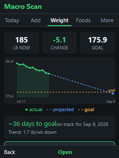
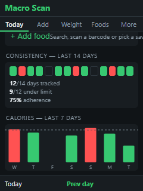
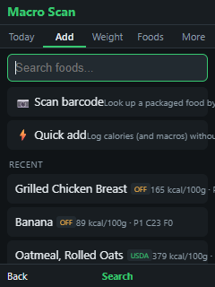
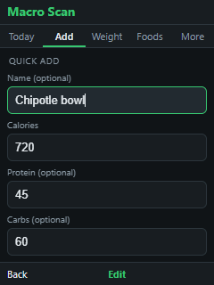

Calorie, macro & weight tracker
Built for KaiOSMacroScan is a fast, private calorie and macro tracker made for KaiOS feature phones. Log your food, hit your goals, and watch your weight trend — all with the D-pad, and all stored on your own device.
Look up foods from USDA FoodData Central and Open Food Facts, or scan a barcode.
Track calories, protein, carbs and fat against your daily goals with a live ring.
See how far into your day you are versus how much of your calorie budget you've used.
Log your weight and see a projected trend line toward your goal, with an ETA.
A 14-day adherence view shows how consistently you track and stay under your limit.
Your diary lives on your device. No account, no cloud — with an optional sdcard backup.




